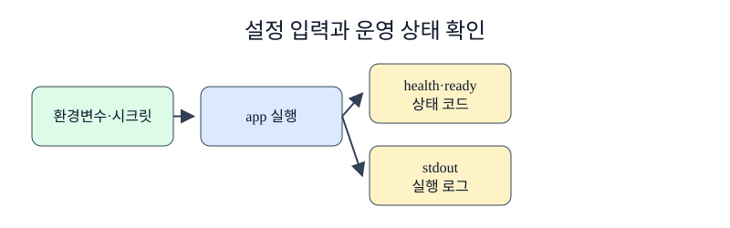

한경 KDT · LLM Agent 개발 & 바이브코딩 · Part 7 · 프로덕션 엔지니어링 · Ch 32 · Docker와 컨테이너
컨테이너가 시작되었다는 사실과 사용자 요청을 처리할 준비가 됐다는 사실은 다릅니다. 또한 DB 주소 같은 설정과 비밀번호 같은 비밀값을 같은 방식으로 다루면 디버깅 출력에 비밀이 나타날 수 있습니다. 배포 자동화로 넘어가기 전에 설정, 상태, 로그가 운영자에게 어떤 신호를 주는지 명확히 정해야 합니다.
4절에서 app과 db를 연결했고 Compose가 두 서비스의 상태를 기다리는 것을 확인했습니다. app.py의 read_secret()은 DB_PASSWORD_FILE이 있으면 파일 내용을 읽고, 로컬 학습에서만 환경변수 값을 대체 경로로 사용합니다. /health는 프로세스의 HTTP 응답을, /ready는 DB 쿼리 가능 여부를 검사합니다.
건물 안내판에는 공개해도 되는 층 정보가 적히고, 출입 키는 잠긴 보관함에서 필요한 사람에게만 전달됩니다. 환경변수(environment variable)는 DB 호스트나 로그 수준처럼 실행 환경에 따라 바뀌는 일반 설정을 전달하기 좋습니다. 시크릿(secret)은 비밀번호와 API 키처럼 노출되면 안 되는 값입니다. Compose 시크릿은 허용한 서비스의 /run/secrets/<name> 파일로 제공됩니다. 설정 화면과 프로세스 목록에 값이 직접 나타날 가능성을 줄이지만, 개발용 Compose의 파일 원본 보안은 운영자가 별도로 관리해야 합니다. liveness 검사는 프로세스가 응답하는지 확인하고, readiness 검사는 의존 서비스까지 포함해 요청을 받을 준비가 됐는지 확인합니다. 로그는 표준 출력과 표준 오류에 구조가 드러나는 사건을 기록합니다. 비밀값, 전체 인증 헤더, 사용자 원문은 기록하지 않습니다.
환경변수는 일반 설정을 전달하기 편하지만 프로세스 정보와 디버그 출력에 노출될 수 있습니다. Compose secret은 허용된 서비스에 파일로 마운트되며, 예제의 DB_PASSWORD_FILE은 /run/secrets/db_password 경로를 가리킵니다. 애플리케이션은 경로 문자열이 아니라 그 파일의 내용을 읽어 인증에 사용합니다.
liveness는 프로세스가 응답할 수 있는지, readiness는 현재 실제 트래픽을 받을 준비가 됐는지 확인합니다. 데이터베이스 주소를 틀린 컨테이너가 /health 200과 /ready 503을 함께 반환하는 이유입니다. 이번 실습은 두 HTTP 상태와 Compose가 표시한 health 상태까지만 확인합니다. 자동 재시작과 트래픽 제외는 배포 오케스트레이터가 이 신호에 별도 정책을 연결할 때 동작하며, healthcheck 자체가 두 행동을 보장하지 않습니다. 로그에는 요청 식별자를 남기되 비밀값을 출력하지 않습니다.

노트북은 정규화한 Compose 설정에서 DB_PASSWORD_FILE에 /run/secrets/db_password 경로가 있는지 확인합니다. 실패 셀은 DB 호스트를 missing으로 지정한 단독 app을 실행해 /health의 200과 /ready의 503을 함께 확인합니다. 수정 셀은 정상 Compose 스택을 실행하고 app과 db의 Compose 상태와 /ready의 200을 따로 검사합니다. Dockerfile의 app healthcheck는 /health만 호출하므로 Compose의 app healthy 표시는 DB 준비 상태를 포함하지 않습니다. 마지막으로 /vector-count 요청 로그가 있고 공개 예제 비밀번호 문자열은 로그에 없음을 확인합니다.
준비된 Python 3.12 노트북에서 첫 셀부터 Shift+Enter로 하나씩 실행합니다. 안내한 결과를 먼저 확인하고 지정한 값 하나를 바꿔 비교합니다. 문서를 사용하는 실습은 파일 묶음이 필요합니다. 노트북과 실습 파일 함께 받기 · 처음 실습하는 방법. 전체 코드 복사에는 아래의 Before/After 셀도 포함됩니다. 이 HTML에서는 코드를 실행하지 않습니다.
Docker Desktop의 실습 전용 이미지와 스택만 사용해 결과를 확인합니다.
마지막 실습도 같은 전용 프로젝트만 사용합니다.
이 준비 셀은 현재 폴더와 부모 폴더에서 Dockerfile.baseline이 있는 Ch32 실습 폴더를 찾습니다. run(*args, check=True)은 모든 Docker 명령을 그 폴더에서 실행하고 표준 출력·오류와 종료 코드를 CompletedProcess로 반환합니다. 실패 자체를 관찰하는 셀만 check=False를 전달하며, 마지막에는 Docker Engine이 응답하는지 확인합니다.
# Docker 명령을 일정한 폴더에서 실행하고 실패도 결과로 받습니다.
from pathlib import Path
import json, subprocess, time, urllib.request
# 챕터 폴더와 notebooks 폴더 어디에서 시작해도 제공 자료를 찾습니다.
candidates = [parent / "labs/part7/ch32-docker" for parent in (Path.cwd(), *Path.cwd().parents)]
candidates += [Path.cwd(), Path.cwd().parent]
LAB = next(path for path in candidates if (path / "Dockerfile.baseline").is_file())
def run(*args: str, check: bool = True) -> subprocess.CompletedProcess[str]:
return subprocess.run(args, cwd=LAB, text=True, capture_output=True, check=check)
version = run("docker", "version", "--format", "{{.Server.Version}}")
print("Docker Engine", version.stdout.strip())
assert version.stdout.strip()
run("docker", "compose", "-p", "ch32-course-stack", "down", "--volumes", check=False)Docker Engine 29.4.1
CompletedProcess(args=('docker', 'compose', '-p', 'ch32-course-stack', 'down', '--volumes'), returncode=0, stdout='', stderr='time="2026-09-11T11:07:07+09:00" level=warning msg="Warning: No resource found to remove for project \\"ch32-course-stack\\"."\n')Compose 설정에는 시크릿 값 대신 컨테이너 파일 경로가 들어갑니다.
환경변수는 일반 설정을 전달하기 편하지만 프로세스 정보와 디버그 출력에 노출될 수 있습니다. Compose secret은 허용된 서비스에 파일로 마운트되며, 예제의 DB_PASSWORD_FILE은 /run/secrets/db_password 경로를 가리킵니다. 애플리케이션은 경로 문자열이 아니라 그 파일의 내용을 읽어 인증에 사용합니다.
# 정규화한 설정에서 파일 기반 시크릿 연결을 확인합니다.
config = json.loads(run("docker", "compose", "-p", "ch32-course-stack", "config", "--format", "json").stdout)
app_env = config["services"]["app"]["environment"]
print("DB_PASSWORD_FILE", app_env["DB_PASSWORD_FILE"])
assert app_env["DB_PASSWORD_FILE"] == "/run/secrets/db_password"DB_PASSWORD_FILE /run/secrets/db_password
확인할 점 — 명령의 종료 코드와 실제 출력이 본문의 설명과 같은지 확인합니다. 실습 전용 이름을 사용했으므로 다른 Docker 자원을 변경하지 않습니다.
잘못된 DB 호스트를 사용한 app은 liveness 200과 readiness 503을 동시에 반환했습니다. 이는 프로세스 자체는 응답하지만 DB를 사용하는 요청을 처리할 준비가 안 됐음을 호출자에게 알립니다. 정상 스택에서는 app과 db가 모두 healthy였고 /ready도 200을 반환했습니다. 요청 로그에는 경로와 상태가 남았습니다. replace-this 문자열은 최근 로그에 나타나지 않았습니다. 이 검사는 해당 로그 범위의 비노출만 보여 줍니다. 애플리케이션 예외 처리, 프록시, 외부 관측 도구까지 포함한 전체 시스템의 비밀 보호를 보장하지 않습니다.
앞의 실행 예제를 실행한 같은 노트북에서 Before 다음 After 순서로 실행합니다. 출력은 실제 실행 결과입니다.
잘못된 DB 호스트를 준 단독 앱은 살아 있지만 준비 상태가 아닙니다.
# DB_HOST를 고의로 틀리고 liveness 200과 readiness 503을 함께 확인합니다.
started = run("docker", "run", "-d", "--rm", "--name", "ch32-unready", "-p", "127.0.0.1:18333:8000", "-e", "DB_HOST=missing", "ch32-optimized:local")
time.sleep(2)
health = run("curl", "-sS", "-o", "/dev/null", "-w", "%{http_code}", "http://127.0.0.1:18333/health", check=False)
ready = run("curl", "-sS", "-o", "/dev/null", "-w", "%{http_code}", "http://127.0.0.1:18333/ready", check=False)
print("health status", health.stdout, "ready status", ready.stdout)
run("docker", "stop", "ch32-unready")
assert health.stdout == "200" and ready.stdout == "503"health status 200 ready status 503
Compose가 DB 준비를 확인한 다음 app을 시작합니다.
# 정상 스택에서는 Compose healthcheck와 앱 readiness를 따로 확인합니다.
run("docker", "compose", "-p", "ch32-course-stack", "up", "--build", "--wait")
raw_ps = run("docker", "compose", "-p", "ch32-course-stack", "ps", "--format", "json").stdout
ps = [json.loads(line) for line in raw_ps.splitlines() if line]
states = {item["Service"]: item["Health"] for item in ps}
ready = run("curl", "-sS", "-o", "/dev/null", "-w", "%{http_code}", "http://127.0.0.1:18332/ready")
print(states, "ready status", ready.stdout)
assert states == {"app": "healthy", "db": "healthy"} and ready.stdout == "200"{'app': 'healthy', 'db': 'healthy'} ready status 200
최근 로그에서 요청과 준비 메시지를 확인한 뒤 전용 볼륨까지 삭제합니다.
liveness는 프로세스가 응답할 수 있는지, readiness는 현재 실제 트래픽을 받을 준비가 됐는지 확인합니다. 데이터베이스 주소를 틀린 컨테이너가 /health 200과 /ready 503을 함께 반환하는 이유입니다. 이번 실습은 두 HTTP 상태와 Compose의 health 표시까지만 확인합니다. 자동 재시작과 트래픽 제외는 오케스트레이터가 별도 정책을 연결할 때 동작하며 healthcheck 자체가 보장하지 않습니다.
# HTTP 요청을 만든 뒤 최근 로그만 읽습니다.
urllib.request.urlopen("http://127.0.0.1:18332/vector-count").read()
logs = run("docker", "compose", "-p", "ch32-course-stack", "logs", "--no-color", "--tail", "20", "app")
print("has request log", "vector-count" in logs.stdout, "secret exposed", "replace-this" in logs.stdout)
assert "vector-count" in logs.stdout and "replace-this" not in logs.stdout
run("docker", "compose", "-p", "ch32-course-stack", "down", "--volumes")has request log True secret exposed False
CompletedProcess(args=('docker', 'compose', '-p', 'ch32-course-stack', 'down', '--volumes'), returncode=0, stdout='', stderr=' Container ch32-course-stack-app-1 Stopping \n Container ch32-course-stack-app-1 Stopped \n Container ch32-course-stack-app-1 Removing \n Container ch32-course-stack-app-1 Removed \n Container ch32-course-stack-db-1 Stopping \n Container ch32-course-stack-db-1 Stopped \n Container ch32-course-stack-db-1 Removing \n Container ch32-course-stack-db-1 Removed \n Volume ch32-course-stack_pgdata Removing \n Network ch32-course-stack_default Removing \n Volume ch32-course-stack_pgdata Removed \n Network ch32-course-stack_default Removed \n')secrets/db_password.txt.example은 공개 실습용 값입니다. 운영 비밀번호로 사용하지 않고 실제 파일은 버전 관리 밖에서 권한을 제한합니다.docker compose logs --tail과 --since로 관찰 범위를 제한합니다. 장애 분석에는 시간, 서비스명, 요청 식별자와 오류 유형을 남기되 비밀값과 개인정보는 제외합니다.다음 학습과 이어지는 지점 — Ch33에서는 이 이미지 빌드와 상태 검사를 CI/CD 단계에 넣고 레지스트리와 배포 환경으로 이어갑니다.
DB_PASSWORD 대신 DB_PASSWORD_FILE을 전달하는 이유는 무엇인가요?
정답과 해설 — 비밀값을 환경변수 값으로 직접 노출하지 않고 허용된 서비스가 파일로 읽게 하기 위해서입니다.
/health가 200이고 /ready가 503일 수 있는 상황을 설명해 보세요.
정답과 해설 — API 프로세스는 응답하지만 PostgreSQL 같은 필수 의존 서비스에 연결하지 못한 상황입니다.
로그에 남기면 안 되는 값 두 가지를 적어 보세요.
정답과 해설 — 비밀번호, API 키, 전체 인증 헤더와 개인정보가 포함된 원문 중 두 가지를 적으면 됩니다.
Compose 시크릿을 쓰면 원본 파일 관리가 필요 없어지나요?
정답과 해설 — 아닙니다. 개발용 Compose는 호스트 파일을 mount하므로 파일 생성, 권한, 배포 전달과 폐기 절차를 별도로 관리해야 합니다.
healthcheck를 무겁게 만들면 어떤 문제가 생기나요?
정답과 해설 — 검사가 자주 실행되어 의존 서비스에 부하를 주고 실제 요청 성능까지 낮출 수 있습니다.